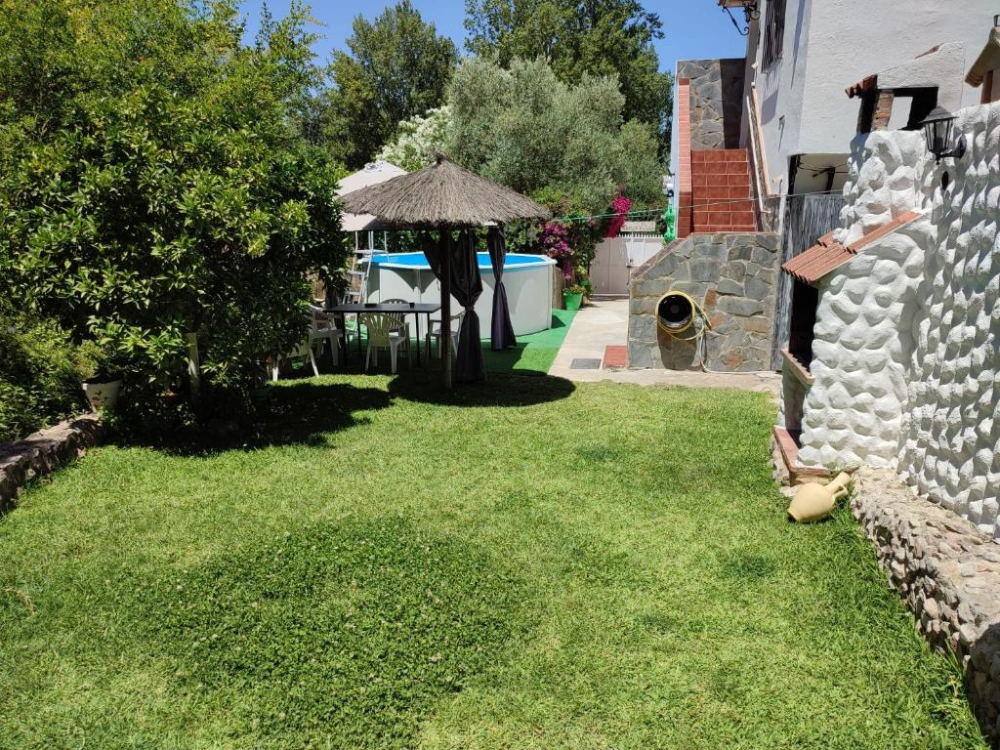
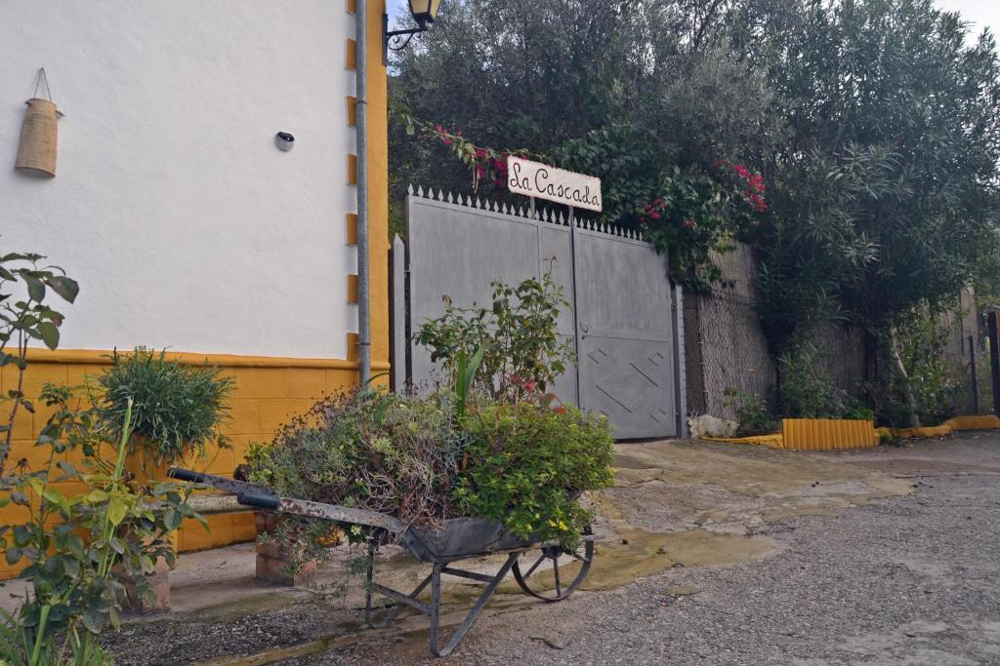
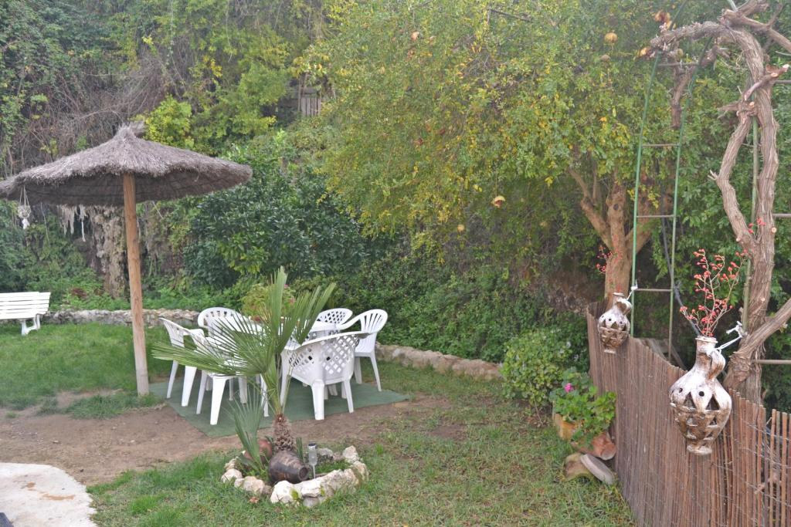
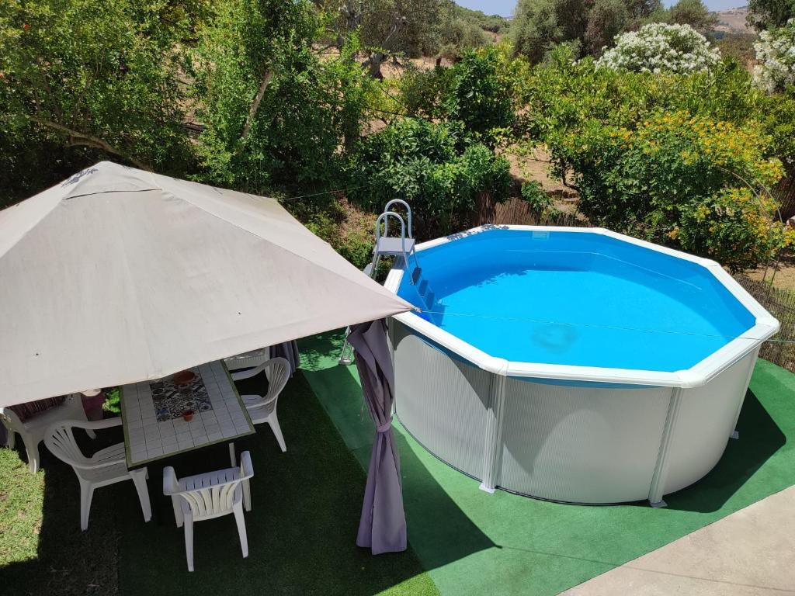
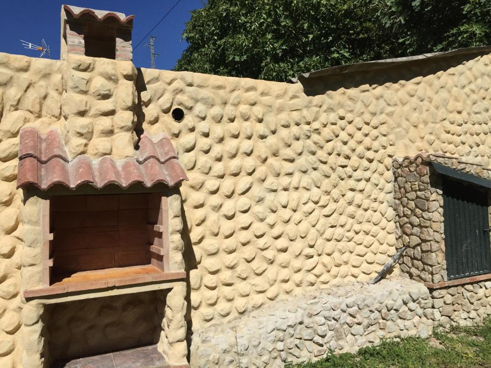
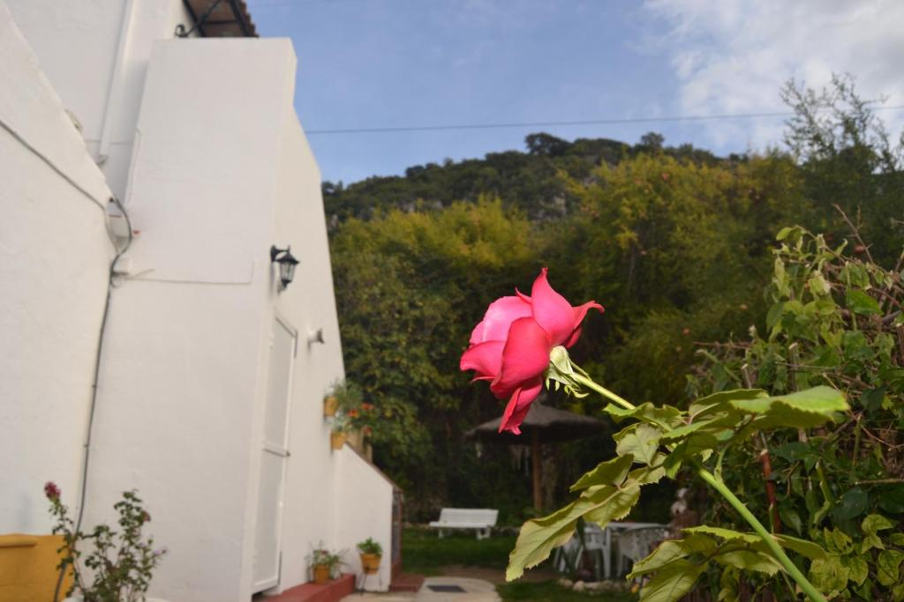
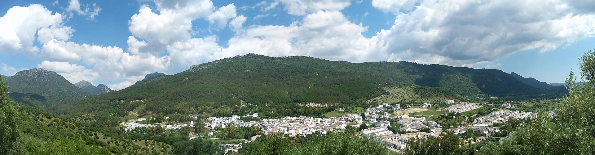

Verde alrededor
Jardín, plantas y rincones con mesas y sillas en el exterior.

EL BOSQUE, CÁDIZ · CASA RURAL
Unos días para estar fuera.
Y sentirte en tu sitio.
BIENVENIDO A LA CASCADA
Una fachada blanca, detalles de piedra y el verde alrededor. La Cascada te espera en El Bosque, con rincones al aire libre para disfrutar de una estancia a tu ritmo.
Asómate a la casa. Imagina el café de la mañana, una conversación a la sombra y esos días que no necesitan demasiados planes.
Recorre sus espacios
LA CASA, EN IMÁGENES
Acércate a los detalles.
Pulsa una fotografía para ampliarla.

El rincón del jardín
Al aire libre
Piedra y sobremesas
Las pequeñas cosasFotografías reales de la casa y sus exteriores.
PARA DISFRUTAR SIN PRISA
Jardín, plantas y rincones con mesas y sillas en el exterior.
La barbacoa de obra forma parte de los espacios exteriores de la casa.
Consulta por teléfono la capacidad, el equipamiento y el uso de la piscina para las fechas de tu visita.

EL BOSQUE · SIERRA DE CÁDIZ
El Bosque es el lugar donde empieza tu escapada. Un pueblo de la Sierra de Cádiz para pasear, mirar alrededor y cambiar de ritmo.
Encuéntranos en el mapa (nueva pestaña)HAZ SITIO A UNOS DÍAS AQUÍ
Cuéntanos cuándo te gustaría venir.
Consulta disponibilidad, tarifas y detalles de la casa directamente por teléfono.
HABLA CON EL ALOJAMIENTO
956 727 057Llamar para consultar estancia Camino de La Torrecilla s/nLa reserva y sus condiciones se acuerdan con el alojamiento.